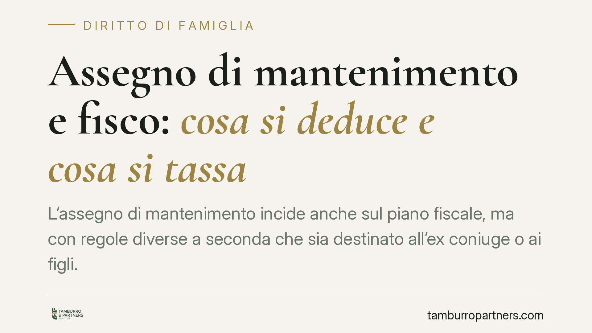

Assegno di mantenimento e fisco: cosa si deduce e cosa si tassa
L'assegno di mantenimento incide anche sul piano fiscale, ma con regole diverse a seconda che sia destinato all'ex coniuge o ai figli. Chi paga può dedurre solo in parte; chi riceve, in alcuni casi, deve dichiarare l'importo come reddito. Conoscere la distinzione evita errori nella dichiarazione e contestazioni dell'Agenzia delle Entrate.

Il quadro: due assegni, due discipline
Quando parliamo di "assegno di mantenimento" nel linguaggio comune, rischiamo di confondere situazioni fiscalmente distinte. Il Testo Unico delle Imposte sui Redditi (TUIR) tratta in modo diverso l'assegno destinato all'ex coniuge e quello destinato ai figli.
La regola di fondo è questa: l'assegno per l'ex coniuge produce effetti fiscali sia per chi paga sia per chi riceve; l'assegno per il mantenimento dei figli, invece, è fiscalmente neutro. Non si deduce e non si tassa.
Inquadramento normativo
Per chi versa l'assegno, l'art. 10, comma 1, lett. c) del TUIR consente la deduzione dal reddito complessivo degli assegni periodici corrisposti al coniuge, purché disposti dal giudice in sede di separazione o divorzio. "Deduzione" significa che l'importo si sottrae dal reddito prima del calcolo dell'imposta, riducendo la base imponibile.
Attenzione a due limiti. Primo: la deduzione riguarda solo l'assegno destinato all'ex coniuge, non la quota per i figli. Secondo: sono deducibili solo gli assegni periodici; l'assegno versato in un'unica soluzione (la cosiddetta *una tantum*) non è deducibile, perché ha natura di attribuzione patrimoniale e non di sostegno periodico.
Sul versante di chi riceve, l'art. 50, comma 1, lett. i) del TUIR qualifica l'assegno periodico ricevuto dall'ex coniuge come reddito assimilato a quello di lavoro dipendente. Il beneficiario deve quindi dichiararlo e su di esso sarà applicata l'imposta.
La Cassazione ha consolidato questi principi. Con la sentenza n. 13029/2013 ha ribadito la non deducibilità dell'assegno *una tantum*. Con l'ordinanza n. 10323/2011 ha chiarito che la deduzione presuppone un titolo giudiziale che stabilisca l'obbligo periodico.
Il problema dell'assegno indistinto
Una difficoltà pratica frequente riguarda il caso in cui il provvedimento del giudice preveda un unico importo, senza distinguere la quota per l'ex coniuge da quella per i figli. In questa ipotesi, per orientamento dell'Agenzia delle Entrate, si presume che metà dell'assegno sia destinata al coniuge (dunque deducibile) e metà ai figli (non deducibile), salvo diversa specificazione nel titolo.
È un dettaglio che pesa. Un provvedimento che indica separatamente le due quote consente di calcolare con precisione la parte deducibile ed evita la presunzione del 50%, non sempre favorevole.
Implicazioni pratiche
Per chi paga, la corretta gestione fiscale può ridurre in modo sensibile l'imposta dovuta, ma solo se la documentazione è ordinata. Occorre conservare il titolo giudiziale e la prova dei pagamenti effettuati, preferibilmente tracciabili.
Per chi riceve, l'assegno per l'ex coniuge non è "denaro netto": va dichiarato e concorre a formare il reddito. Ignorarlo espone al rischio di accertamento. L'assegno per i figli, invece, resta fuori dalla dichiarazione.
La rivalutazione annuale dell'assegno, se prevista, segue le stesse regole: la parte destinata al coniuge resta deducibile per chi paga e imponibile per chi riceve.
Cosa fare in concreto
- Verificate il titolo: controllate che la sentenza o il verbale distingua la quota per l'ex coniuge da quella per i figli. In assenza, valutate un chiarimento o una modifica.
- Tracciate i pagamenti: versate tramite bonifico o strumenti documentabili, indicando la causale. La prova del pagamento è condizione della deduzione.
- Distinguete le voci in dichiarazione: deducete solo la parte relativa all'ex coniuge; non inserite la quota figli né l'eventuale *una tantum*.
- Se ricevete l'assegno, dichiarate la quota destinata a voi come coniuge e conservate il prospetto degli importi percepiti.
- In caso di dubbio sulla ripartizione, consigliamo di richiedere una consulenza prima della presentazione della dichiarazione, per evitare rettifiche.
La materia interseca diritto di famiglia e diritto tributario: le scelte fatte in sede di separazione hanno effetti fiscali che durano anni. Una redazione accurata del provvedimento, sotto questo profilo, vale quanto le clausole di merito.
Ogni famiglia ha il suo equilibrio.
Separazione, divorzio, affidamento, assegno: se vuoi un confronto riservato su una specifica situazione, scrivi allo studio. Ti rispondiamo entro un giorno lavorativo.